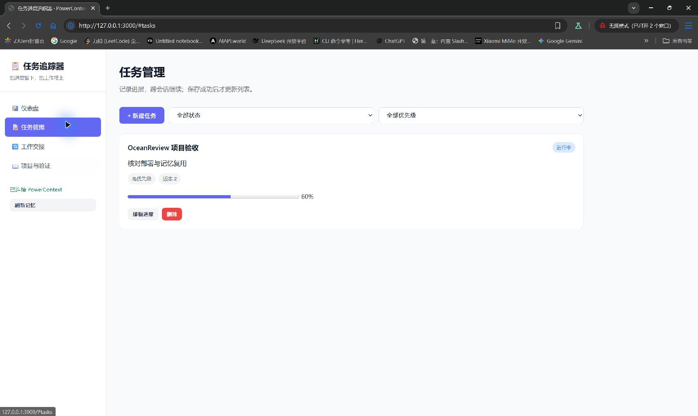

解决什么问题
任务散落在聊天和笔记里，换一次会话就要重新解释进度。这个项目把任务、进展与下一步保存在 PowerContext，下次打开时直接读取。
核心功能
任务创建与编辑、进度与优先级、截止日期、工作交接，以及历史上下文召回。任务和交接都从服务端记忆恢复，不以浏览器缓存作为保存成功的依据。

体验与复现
- 创建名称为「项目验收 OceanReview」的任务。
- 把进度改为 60%，创建含「继续核对部署」的交接。
- 另开浏览器或重启本地应用，确认任务与交接仍在。
- 到工作交接页搜索 OceanReview，核对返回的历史上下文。
当前站点使用部署者配置的共享工作区。请仅使用演示数据。
开发记录
开发来源、已验证内容和待补交的 Qoder 记录分别列在仓库 SUBMISSION.md 中。本站不把修复记录当作 Qoder 开发证明。
查看本次读取的保存凭据
服务连接后显示记忆 ID 和版本。